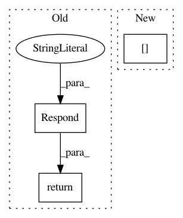

1e7af1285c2c506d1c73f6e6cb612a26b5cf3da6,tensorboard/backend/application.py,TensorBoardWSGI,_serve_plugins_listing,#TensorBoardWSGI#Any#,225
Before Change
Returns:
A werkzeug.Response object.
return http_util.Respond(
request,
{plugin.plugin_name: plugin.is_active() for plugin in self._plugins},
"application/json")
def __call__(self, environ, start_response): // pylint: disable=invalid-name
Central entry point for the TensorBoard application.
After Change
response = {}
for plugin in self._plugins:
start = time.time()
response[plugin.plugin_name] = plugin.is_active()
elapsed = time.time() - start
tf.logging.info(
"Plugin listing: is_active() for %s took %0.3f seconds",
In pattern: SUPERPATTERN
Frequency: 3
Non-data size: 3
Instances
Project Name: tensorflow/tensorboard
Commit Name: 1e7af1285c2c506d1c73f6e6cb612a26b5cf3da6
Time: 2017-10-19
Author: nfelt@users.noreply.github.com
File Name: tensorboard/backend/application.py
Class Name: TensorBoardWSGI
Method Name: _serve_plugins_listing
Project Name: tensorflow/tensorboard
Commit Name: b85fd873930c51beaba187673f1548eb56e7f38a
Time: 2020-04-16
Author: wchargin@gmail.com
File Name: tensorboard/plugins/audio/audio_plugin.py
Class Name: AudioPlugin
Method Name: _serve_individual_audio
Project Name: tensorflow/tensorboard
Commit Name: 1780833b30d953509200bf9560be2ba42fabe9ff
Time: 2020-01-06
Author: cais@google.com
File Name: tensorboard/plugins/debugger_v2/debugger_v2_plugin.py
Class Name: DebuggerV2Plugin
Method Name: serve_runs